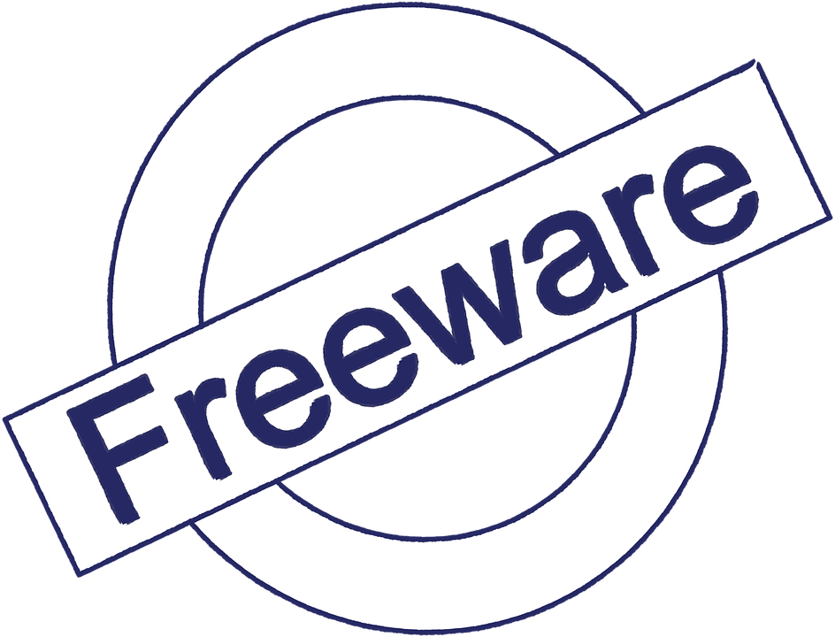

Co je to licence?
Uživatel nemůže koupit program jako celek se všemi právy k němu, ale může získat pouze licenci (oprávnění) k jeho užívání. Z toho plyne, že nesmí žádným způsobem upravovat toto dílo, pokud k tomu autor nedá svůj výslovný souhlas. Licence je většinou nepřenosná, a proto není možné tuto licenci někomu dalšímu prodat nebo darovat.
Multilicence
Multilicence. Při koupi programu běžně získává uživatel oprávnění provozo- vat program na jednom počítači. V případech hromadného využití programu (firmy, školy ...) stačí koupit jedno balení programu a k němu vícenásobnou licenci pro další počítače, která bývá cenově výhodnější variantou.
Demoverze a zkušební verze programů
Demoverze a zkušební verze programů. Demoverze jsou „ostré“ programy, které mají zablokované některé funkce, často ukládání souboru na disk a tisk. Dodávají se zdarma, nebo za malý poplatek. V demoverzi je možné vyzkoušet funkčnost programu před jeho koupí. Zkušební (trial) verze většinou umožňují plnohodnotnou práci včetně ukládání i tisku, ale jen po určitou dobu. Po uply- nutí této doby program nelze spustit ani znovu nainstalovat.
Freeware
Freeware. Doslova lze název této skupiny programů přeložit jako volné zboží. Program je možné používat a rozšiřovat zdarma, požaduje se pouze dodržo- vání autorských práv. Nesmí se zahrnovat do komerčně šířených programů a nesmí být změněn. Někdy je jako freeware šířen i velmi kvalitní program a po jeho hromadném rozšíření se z něj může stát program šířený komerčně.
Open Source
Open Source znamená doslova otevřený zdroj. Takové programy musí být vždy šířeny i s uvedením zdrojových textů, takže každý (kdo má patřičné zna- losti) může přesně zjistit, jak takový program funguje. Každý ho také může vylepšit, opravit v něm chybu, použít ho ve svém programu, vždy však musí takový produkt opět distribuovat jako Open Source.